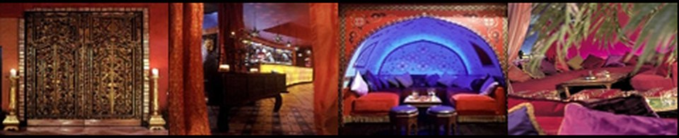

Gold-leafed doors in the heart of Piccadilly Circus.

The exhibit
Set in the heart of Piccadilly Circus, Elysium was — in most opinions, said its page — the classiest venue in London after Chinawhite, and the premier choice for any celebration.
Gold-leafed, hand-carved double doors formed the gateway to the main club. Guests were greeted by the Amber Bar, linking the club floor with the restaurant and VIP lounge — the latter a personal getaway metres from the high-energy action.
Around the main floor sat the VIP sections, including a room for parties of up to twenty set beneath the DJ booth, detailed with hand-painted design and candles. Sizable plush cushions, large comfy sofas reservable for groups of up to 20, and a restaurant with a fine selection of dishes completed the picture.
“The classiest venue in London after Chinawhite.”
Photo archive in restorationNo photographs survived for this venue — yet
About that Chinawhite reference
The original FunkyElite page ranked Elysium beneath one venue: Chinawhite. That reference wasn’t decoration — it was the era’s undisputed benchmark, and it matters here.
Chinawhite opened at 6 Air Street, just off Regent Street, in December 1998, founded by Rory Keegan, John Stephen and Patrice Gouty. Its Bali-and-Java aesthetic, opium-den-lit "Mao Room" VIP suite, roughly 400-person capacity and famously strict door policy made it the fixed point every other West End room measured itself against. Kate Moss, Prince Harry, Leonardo DiCaprio and Sienna Miller were regulars — Sienna, per Keegan’s own later interview, met Jude Law there. Hugh Hefner threw his 75th birthday party in the room on 18 May 2001. A young Amy Winehouse played an early showcase there, handing out CDs before anyone knew her name.
Chinawhite closed the Soho venue in December 2008, reopening briefly in Fitzrovia in 2009. When FunkyElite’s page called Elysium "the classiest venue in London after Chinawhite," this was the room being compared to — which places Elysium, on the record, in some very good company.